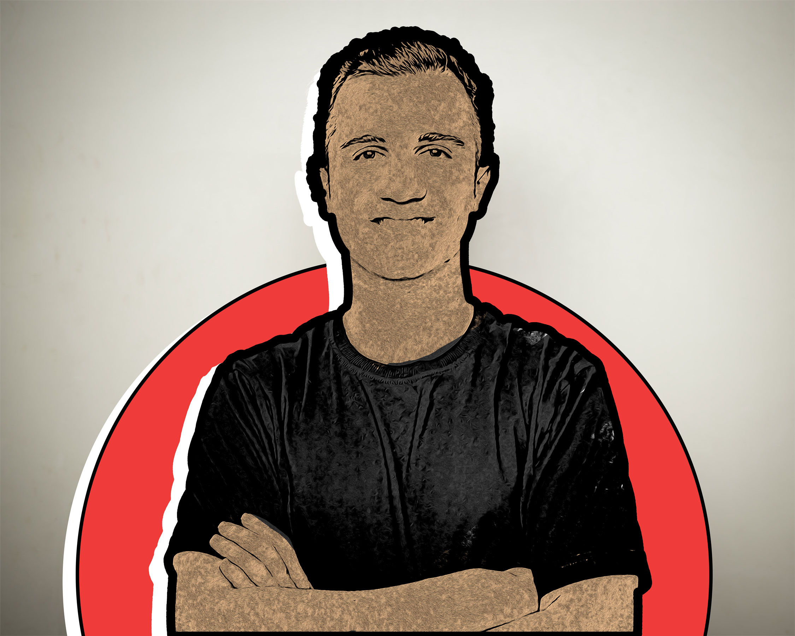

This story is about Sticky. Throughout his life, he never understood why people referred to him as a stickman. He was always told that he looks like a stick, but he didn't know what a stick as he was blind and never asked. One day, he heard someone calling his name from afar ...

The voice kept coming closer and closer, until Sticky was able to touch something, it started speaking and explaining to him that it's a wooden stick. He still couldn't understand why people were comparing him to an object and not a person.
He picked the stick up and talked for a bit, until he found that what they have in common is how thin they both are, and that people have been calling him a stick man as he combines both aspects, the thinness of the stick as well as the body of a man. The stick told him that anyone that picks it up has one wish to make, and wished to see the other stick men in the world ...

A few seconds later, he felt the ground split and felt a free fall for a couple of minutes. He was horrified and confused until he his body was caught by a piece of cloth, held from the sides by two stickmen, welcoming him to Stick World, a place that consists of people that made the same wish as Sticky.

A few seconds later, he felt the ground split and felt a free fall for a couple of minutes. He was horrified and confused until he his body was caught by a piece of cloth, held from the sides by two stickmen, welcoming him to Stick World, a place that consists of people that made the same wish as Sticky.

A few seconds later, he felt the ground split and felt a free fall for a couple of minutes. He was horrified and confused until he his body was caught by a piece of cloth, held from the sides by two stickmen, welcoming him to Stick World, a place that consists of people that made the same wish as Sticky.